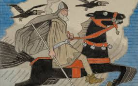
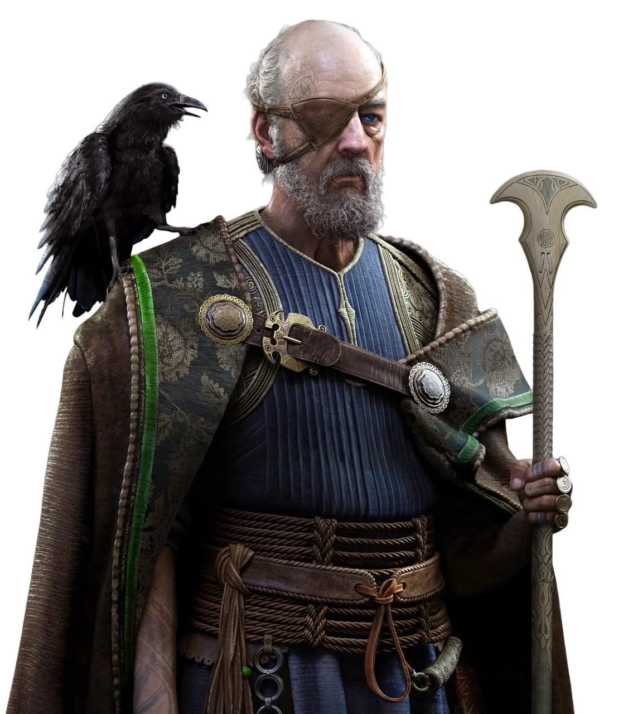

. Origen de Odín Odín es hijo de Bor, un gigante primigenio, y de Bestla, una giganta. Junto a sus hermanos Vili y Vé, Odín desempeña un papel fundamental en la creación del mundo. Creación del mundo: Odín y sus hermanos mataron al gigante Ymir, y con su cuerpo formaron el universo. Los huesos de Ymir se convirtieron en montañas, su sangre en océanos y su carne en la tierra. Así, los dioses crearon un cosmos ordenado, separando los reinos de los hombres, los dioses y los gigantes.
2. El Árbol del Mundo y la Sabiduría Odín es conocido por su búsqueda incansable de sabiduría, incluso a costa de grandes sacrificios. El sacrificio en Yggdrasil: En su afán por obtener conocimiento, Odín se colgó del árbol del mundo, Yggdrasil, por nueve días y nueve noches. Durante este tiempo, no comió ni bebió, y sufrió terribles dolores hasta que finalmente obtuvo las runas, símbolos mágicos y fuente de poder y sabiduría. El ojo perdido: En otra ocasión, Odín sacrificó uno de sus ojos en el pozo de Mímir, que contenía las aguas de la sabiduría. A cambio, pudo beber de estas aguas y ganar una comprensión más profunda del cosmos y el destino.
3. Odín, el Dios de la Guerra Como dios de la guerra, Odín es conocido por su relación con los guerreros y la batalla. Valhalla y los Einherjar: Odín selecciona a los guerreros más valientes caídos en batalla para que sean llevados al Valhalla, su majestuoso salón en Asgard. Allí, estos guerreros, conocidos como Einherjar, entrenan para la batalla final del Ragnarök. Las Valquirias: Las Valquirias, las servidoras de Odín, desempeñan un papel crucial al elegir a los caídos dignos de unirse al Valhalla. Estas mujeres guerreras simbolizan el vínculo de Odín con la muerte heroica.
4. Odín y la Magia Además de ser un dios guerrero, Odín es maestro de la magia (seiðr) y el conocimiento oculto. Transformaciones y hechizos: Odín tiene la capacidad de cambiar de forma y viajar entre los mundos. A menudo utiliza su magia para influir en los eventos o para aprender secretos que otros intentan ocultar. Poesía y conocimiento oculto: Odín robó el hidromiel de la poesía, una bebida mágica que otorga la habilidad de crear poesía inspirada y sabiduría. Este acto lo conecta con la creatividad y la
5. Atributos y Símbolos Odín es conocido por sus numerosos atributos y símbolos que reflejan su complejidad como dios: Sleipnir: Su caballo de ocho patas, Sleipnir, es el más rápido de todos los caballos y puede viajar entre los mundos. Gungnir: Su lanza, Gungnir, nunca falla en alcanzar su objetivo, simbolizando su poder absoluto en la guerra. Hugin y Munin: Sus cuervos, cuyos nombres significan "Pensamiento" y "Memoria", vuelan por el mundo y traen información a Odín cada día. Trono Hlidskjalf: Desde este trono, Odín puede observar los nueve reinos y ver todo lo que sucede.
6. Odín y el Ragnarök Odín juega un papel central en la profecía del Ragnarök, el fin del mundo. Liderazgo en la batalla final: Odín liderará a los dioses y a los Einherjar contra las fuerzas del caos, lideradas por Loki y sus hijos, como Fenrir, la serpiente Jörmungandr y Hel. La muerte de Odín: Durante el Ragnarök, se predice que Odín será devorado por el lobo Fenrir. Sin embargo, su muerte no será el fin del cosmos, ya que un nuevo mundo renacerá tras la destrucción.
7. La influencia de Odín en la sociedad nórdica En la sociedad nórdica, Odín representaba muchos ideales valorados por los vikingos: Sabiduría: Su búsqueda del conocimiento y los sacrificios que hizo para obtenerlo simbolizaban la importancia de la sabiduría y la astucia. Valentía: Odín era visto como un modelo de coraje, especialmente en su aceptación del destino y de la muerte. Honor: Como señor del Valhalla, Odín recompensaba la valentía en batalla, un valor fundamental en la cultura vikinga.
8. Interpretación Moderna En tiempos modernos, Odín ha sido reinterpretado como un símbolo de resiliencia, curiosidad intelectual y liderazgo. Aparece en literatura, películas y series, como las adaptaciones en los cómics de Marvel y en la serie Vikings, que lo retratan como una figura mística y sabia.
